Reverse Osmosis Replacement Filters: Which Set Fits Your System (2026)
PureFlow Lab is reader-supported. We may earn a commission when you buy through links in this guide — at no extra cost to you. As an Amazon Associate, we earn from qualifying purchases. See our Disclosure for details.
An RO system is only as good as its filters. The pre-filters protect the membrane, the membrane does the reverse osmosis, and any post-filter polishes the taste. This guide shows which replacement set fits which system, how often each stage is typically changed according to the makers, and how to tell when a membrane is due. Every spec below comes from the maker or the product listing; we don't lab-test products.
How often to change reverse osmosis filters
Intervals depend on your water and how much you use, so the maker's schedule for your model is the one to follow. Here's what several makers state for their own filters:
| Filter | Stated life (per the maker or listing) |
|---|---|
| iSpring F4AK (sediment, GAC, carbon, alkaline) | 6 months (sold as a 6-month set) |
| iSpring F9K | 1 year (sold as a 1-year set) |
| iSpring F28K75 | 3 years (sold as a 3-year set) |
| iSpring MC7 membrane (75 GPD) | About 2–3 years depending on source water, per iSpring |
| Waterdrop G3-N1CF (pre-filter) | 6 months or 550 gallons |
| Waterdrop G3-2CFCB | 1 year |
| Waterdrop G3P600-RO membrane | Up to 24 months or 2,200 gallons |
| AquaTru Classic pre/carbon filter | Up to 6 months or 600 gallons |
| AquaTru Carafe pre/carbon + VOC filters | 6 months/300 gal and 1 year/300 gal |
| APEC ROES-50 filters | Every 6–24 months based on water quality, per APEC |
Signs your filters or membrane are due
- The calendar or the indicator. Tankless systems like Waterdrop's and iSpring's RO500 have filter-life indicators; tank systems rely on your schedule.
- Rising TDS. A TDS meter reading of your RO water that climbs noticeably over time points to a tired membrane. Compare against the reading you got when the membrane was new.
- Slower flow or a tank that refills slowly can mean clogged pre-filters.
- Taste or odor changes often mean the carbon stages are spent.
Universal vs. brand-specific filters
Traditional under-sink systems (iSpring RCC7AK, APEC ROES-50, Express Water) use standard-size housings, so iSpring says its F4AK and F9K sets fit "most other RO systems that use standard sized filter housings" (10" x 2.5" cartridges). Tankless systems (Waterdrop G3, iSpring RO500) use proprietary twist-in cartridges, so you have to buy that brand's filter for that model.
iSpring (RCC7AK and standard 6-stage systems)

iSpring F4AK 6-Month Pre-Filter + Alkaline Set
Includes FP15 sediment, FG15 GAC, CTO carbon and FA15 alkaline filters. Standard 10" x 2.5" pre-filters; fits iSpring RCC7AK, RCC7P-AK and most RO systems with standard housings, per the listing. Does not include a membrane.
Check Price on Amazon →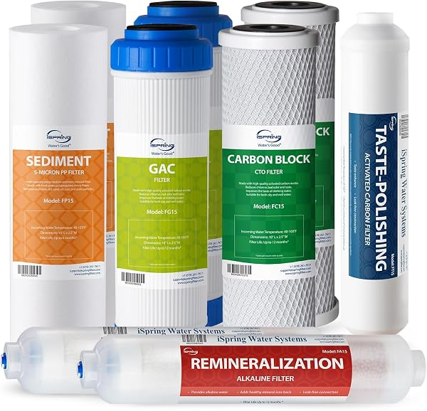
iSpring F9K 1-Year Filter Set
9-filter 1-year pack for 6-stage systems, including 2 sediment, 2 GAC, 2 carbon block and 1 post-carbon filter, with alkaline remineralization filters, per the listing. Fits standard 10" x 2.5" housings. Does not include an RO membrane.
Check Price on Amazon →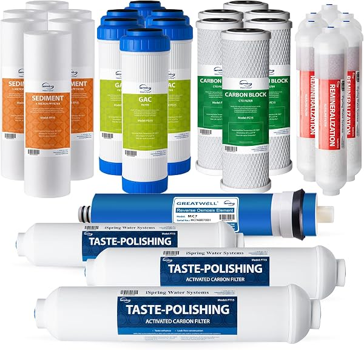
iSpring F28K75 3-Year Replacement Set
28-piece set for 6-stage RO systems with an alkaline mineral filter; fits iSpring alkaline RO systems and most other brand-name RO systems, per the listing.
Check Price on Amazon →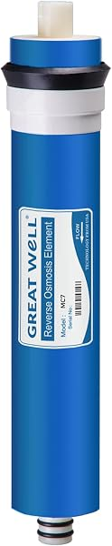
iSpring MC7 RO Membrane, 75 GPD
Standard 11.75" x 1.75" membrane that fits most standard under-sink RO housings. iSpring says it normally lasts about 2–3 years depending on source water.
Check Price on Amazon →iSpring RO500 tankless
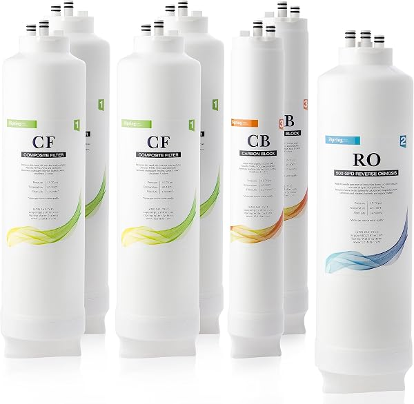
iSpring F7-RO500 2-Year Filter Pack
For the iSpring RO500 tankless: 4 FCF500 composite filters, 1 MRO500 membrane, 2 FCB500 carbon blocks, per the listing. Tool-free filter changes.
Check Price on Amazon →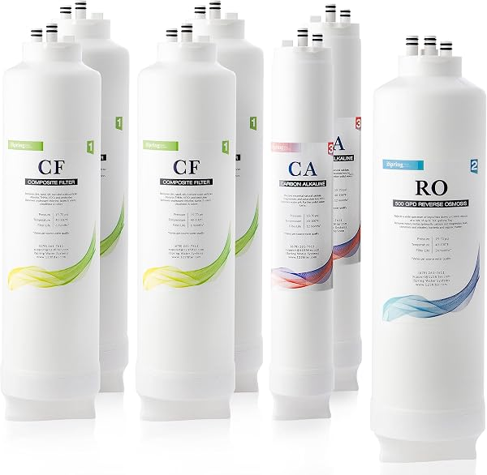
iSpring F7-RO500AK 2-Year Filter Pack
For the RO500AK (alkaline) tankless: 4 FCF500, 1 MRO500 membrane, 2 FCA500 alkaline/carbon filters, per the listing.
Check Price on Amazon →Waterdrop G3 series (G3P600, G3P800)
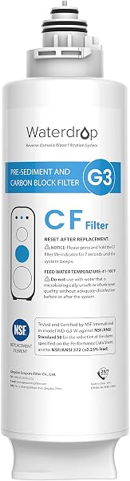
Waterdrop G3-N1CF Filter
3-in-1 front filter for the G3-W, G3P600 and G3P800. Six months or 550 gallons, per Waterdrop. Twist to replace, no tools.
Check Price on Amazon →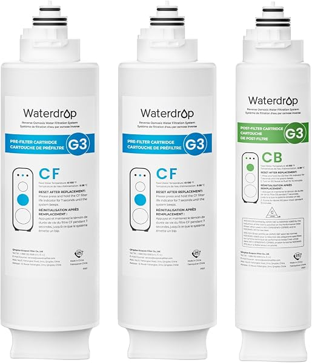
Waterdrop G3-2CFCB Filter
Fits the G3-W, G3P600 and G3P800; coconut-shell carbon block, rated for one year, per the listing.
Check Price on Amazon →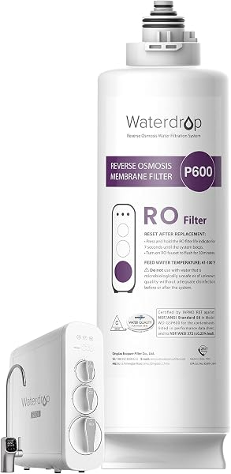
Waterdrop G3P600-RO Filter
RO membrane for the G3P600 only: up to 24 months or 2,200 gallons, per Waterdrop. Waterdrop says not to use it in the G3P800 or G3-W.
Check Price on Amazon →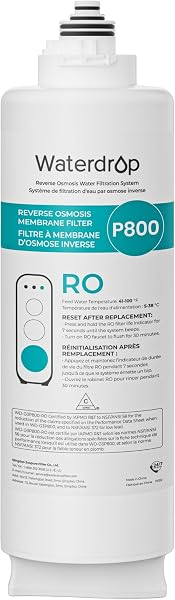
Waterdrop G3P800-RO Filter
RO membrane for the G3P800 only (800 GPD, 3:1 pure-to-drain), per the listing.
Check Price on Amazon →APEC ROES-50
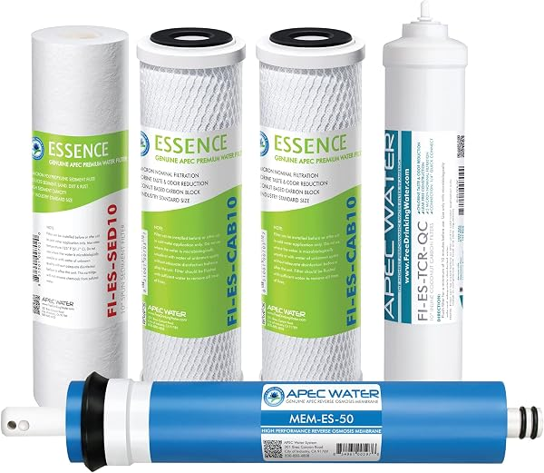
APEC FILTER-MAX-ES50 Complete Replacement Set
For the APEC ROES-50: 5-micron sediment, two 10-micron carbon blocks, a TFC RO membrane and a coconut-shell carbon post-filter, per the listing.
Check Price on Amazon →AquaTru countertop units
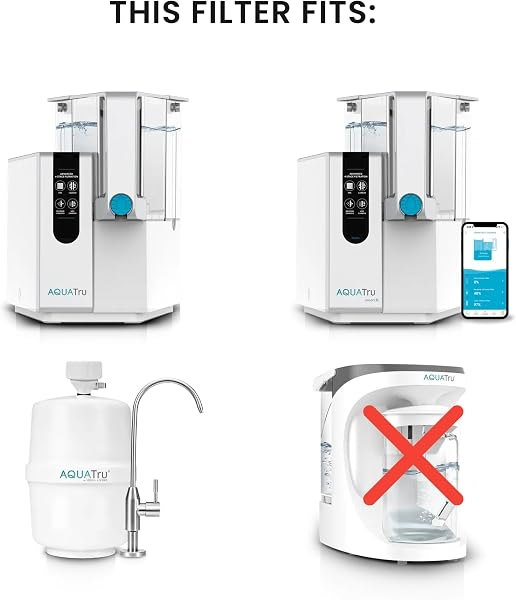
AquaTru Classic Pre/Carbon Filter (Stages 1–2)
Fits AquaTru Classic, Classic Smart and Under Sink purifiers. Up to 6 months or 600 gallons; certified by IAPMO to NSF standards for sediment reduction, per the listing.
Check Price on Amazon →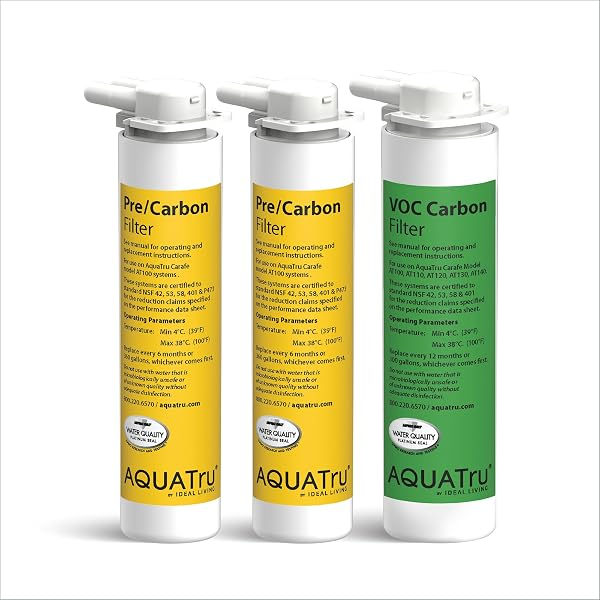
AquaTru One-Year Carafe Filter Combo
For AquaTru Carafe models: one pre/carbon filter (6 months/300 gal) and one VOC filter (1 year/300 gal), per the listing.
Check Price on Amazon →Express Water alkaline systems
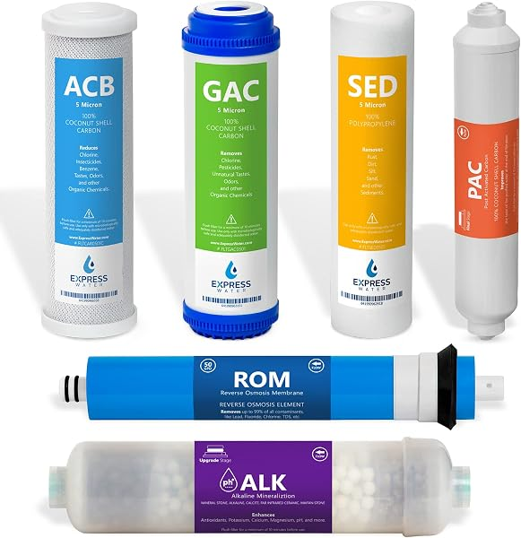
Express Water FLTSETALK065Q Filter Set
Replacement set with sediment, carbon, 50 GPD RO membrane and alkaline mineralization filters for Express Water alkaline RO systems, per the listing.
Check Price on Amazon →How to change RO filters (tank-based systems)
- Turn off the feed-water valve and the tank valve, then open the RO faucet to relieve pressure.
- Unscrew the pre-filter housings with the housing wrench (have a towel and bucket ready).
- Swap in the new cartridges, check the O-rings are seated, and hand-tighten the housings.
- If you're replacing the membrane, open the membrane housing, pull the old one out, and push the new one in fully.
- Turn the water back on, check for leaks, and flush as the maker's instructions say before drinking.
Tankless systems are simpler: Waterdrop and iSpring both describe twist-out cartridges that change without tools.